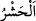
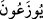
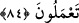

“
” toplamak demektir. Burada kasdedilen bütün mahlûkâtı içine alan küllî
haşrdan sonra olacak azâb için haşr/toplamadır. el-Kâmûs’ta belirtildiği üzere “
”
kendilerine peygamber gönderilen topluluktur. el-Vasît’ta belirtildiği üzere “
”
zümre/grup gibi insanlardan bir bölük demektir. el-Müfredât’ta belirtildiğine göre ise
hızlı geçip giden topluluk demektir.
Mânâ ise şöyledir: Ey Muhammed, kavmine bütün peygamberlerin ümmetlerinden
veya her nesilden kalabalık bir topluluk toplayacağımız vakti an/zikret.
“ ” harf-i cerri, teb’îzıyyedir. Çünkü her ümmet içinde tasdik eden de yalanlayan da
vardır.
“Onlar toplu olarak (hesap yerine) sevkedilirler.”
“
” kelimesi, bu sûrede (17. âyet) Süleyman (a.s.) kıssasında geçti. Yâni
azarlama ve amelleri münakaşa yerinde onların baş tarafı son tarafının yetişip kavuşsun
diye tutulup bekletilirler. Bu, onların sayısının çokluğunu, baş ve son taraflarının
birbirinden ne kadar uzak olduğunu ifâde eder.
“
(cemaat)” ile her ümmetten küfür ve yalanlamada peşlerinden gidilen
ümmetlerin önderleri kasdedilmiştir. Onlara uyan alt tabakadakilerin kendilerine yetişip
katılmaları için onlar hapsedilip tutulurlar. Nitekim İbn Abbâs (r.anhümâ) şöyle
demiştir: “Ebû Cehil, Velîd b. Muğîre, Şeybe b. Rabîa Mekke müşriklerinin önünde
cehenneme sevkolunurlar. Diğer ümmetlerin de küfürde öncülük eden liderleri de aynı
şekilde saptırdıkları insanların önünde ateşe sürüklenirler ve haşrolunurlar. Bir hadîste:
“İmruü’l-kays, Cehenneme sevkolunan şâirlerin bayraktarıdır.”[78] buyrulmuştur.
84. Nihâyet, (hesap yerine) geldikleri zaman Allah buyurur: “Siz benim
âyetlerimi, ne olduğunu kavramadan yalan saydınız öyle mi? Değilse yaptığınız
neydi?”
“Nihâyet,” soru-cevap, münâkaşa ve hesap yerine, haşr meydanına “geldikleri
zaman” yalanladıkları için onları azarlayarak “Allah buyurur: “Siz benim âyetlerimi,
ne olduğunu kavramadan yalan saydınız öyle mi?” Yâni bu buluşma ve hesab gününü
haber veren âyetlerimi siz künhünü bilmeye ulaştıracak şekilde düşünmeden duyar
duymaz yalanladınız mı? Halbuki âyetler kesin olarak tasdik edilmeyi hak etmektedir.
“Değilse yaptığınız neydi?” Yoksa bundan sonra siz ne yaptınız? Allah’a ve
Resûlüne îman etmedikten sonra ne iş yaptınız?
Yâni onların cehâlet, yalanlama, küfür ve mâsıyetlerden başka bir işi yoktu. Sanki
onlar sadece bu kötülükleri işlemek için yaratılmışlar. Halbuki onlar ancak ilim, tasdik,